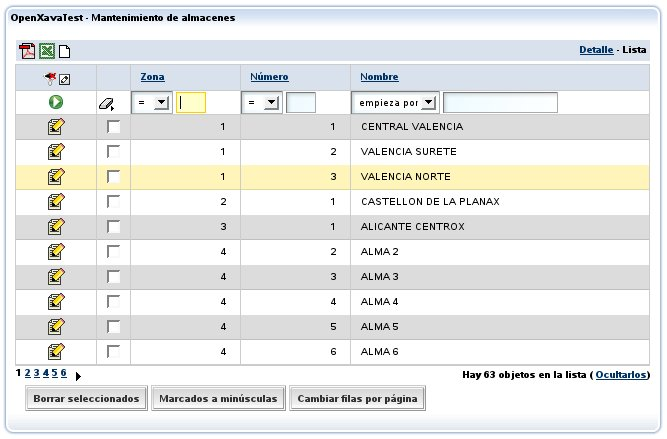
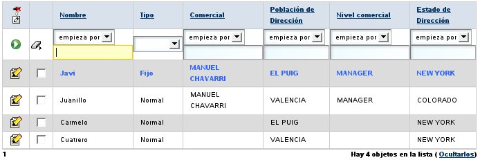
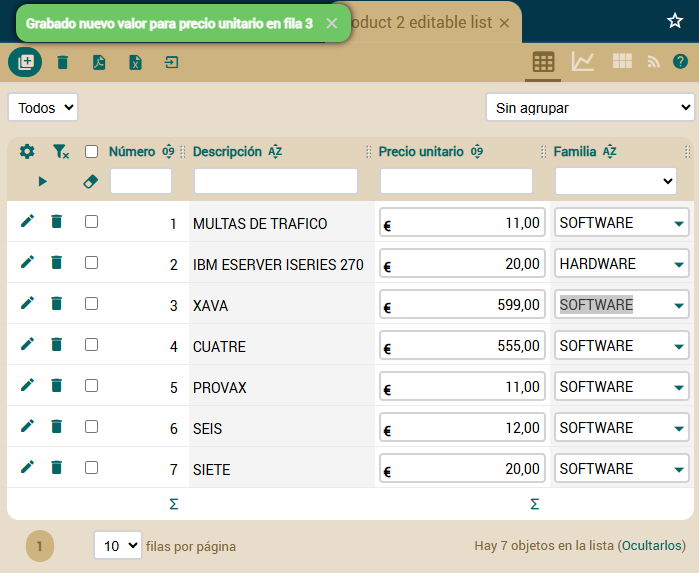
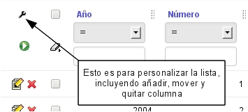

Datos tabulares
Guía de referencia: Modelo | Vista | Datos tabulares | Mapeo objeto/relacional | Controladores | Aplicación | PersonalizaciónTabla de contenidos

Esta lista permite al usuario:
- Filtrar por cualquier columna o combinación de ellas.
- Ordenar por cualquier columna con un simple click.
- Visualizar los datos paginados, y así podemos leer eficientemente tablas de millones de registros.
- Personalizar la lista: añadir, quitar y cambiar de orden las columnas (con el lapicito que hay en la parte superior izquierdas). Las personalizaciones se recuerdan por cada usuario.
- Acciones genéricas para procesar la lista: Como la de generar un informe en PDF, exportar a Excel o borrar los registros seleccionados.
La sintaxis de @Tab es:
@Tab(
name="nombre", // 1
filter=clase del filtro, // 2
rowStyles=array de @RowStyle, // 3
properties="propiedades", // 4
editableProperties="propiedades editables", // 5 Nuevo en v7.6
baseCondition="condición base", // 6
defaultOrder="orden por defecto", // 7
editor="editor por defecto", // 8 Nuevo en v4.6
editors="todos los editores disponibles" // 9 Nuevo en v5.7
)
public class MiEntidad {- name (opcional): Podemos definir varios tabs para una entidad (usa @Tabspara versiones anteriores a la 6.1), y ponerle un nombre a cada uno. Este nombre se usará después para indicar que tab queremos usar (normalmente en aplicación.xml al definir un módulo).
- filter (opcional): Permite definir programáticamente un filtro a realizar sobre los valores que introduce el usuario cuando quiere filtrar.
- rowStyles (varios, opcional): Una forma sencilla de especificar una estilo de visualización diferente para ciertas filas. Normalmente para resaltar filas que cumplen cierta condición. Especificamos un array de @RowStyle, así podemos usar varios estilo por tab.
- properties (opcional): La lista de propiedades a visualizar inicialmente. Pueden ser calificadas. El sufijo + (nuevo en v4.1) se puede añadir a una propiedad para mostrar la suma de la columna abajo.
- editableProperties (opcional): (Nuevo en v7.6) Lista de propiedades que pueden ser editadas directamente en la lista. Solo se permiten propiedades simples editables y referencias con @DescriptionsList.
- baseCondition (opcional): Es una condición que aplicará siempre a los datos visualizados añadiendose a las que pueda poner el usuario.
- defaultOrder (opcional): Para especificar el orden en que aparece los datos en la lista inicialmente.
- editor (opcional): (Nuevo en v4.6) Editor de default-editors.xml o editores.xml usado para visualizar la lista. Se usa para el formato por defecto, si la lista tiene varios formatos los otros permanecen inalterados.
- editores (opcional): (Nuevo en v5.7) Lista de editores separados por coma usados para visualizar la lista. Cada editor corresponde a un formato disponible para los usuarios. Los editores se declaran en default-editors.xml o editores.xml.
Propiedades iniciales y resaltar filas
La personalización más simple es indicar las propiedades a visualizar inicialmente:@Tab(
rowStyles=@RowStyle(style="row-highlight", property="tipo", value="fijo"),
properties="nombre, tipo, comercial.nombre, direccion.municipio," +
"comercial.nivel.descripcion, direccion.estado.nombre"
)En este caso vemos también como se indica un @RowStyle; estamos diciendo que aquellos objetos cuya propiedad tipo tenga el valor fijo han de usar el estilo row-highlight. El estilo ha de definirse en la hoja de estilos CSS. El estilo row-highlight (highlight en versiones anteriores a la v4m3) ya viene predefinido con OpenXava, pero puedes definir tus propios estilos mediante el fichero custom.css (nuevo en v4.5) en src/main/webapp/xava/style (desde v7) o en web/xava/style (hasta v6). El resultado visual del anterior tab es:

Filtros y condición base
Una técnica habitual es combinar un filtro con una condición base:@Tab(name="Actuales",
filter=FiltroAñoActual.class,
properties="año, numero, sumaImportes, iva, cantidadLineas, pagada, cliente.nombre",
baseCondition="${año} = ?"
)
package org.openxava.test.filtros;
import java.util.*;
import org.openxava.filters.*;
/**
* @author Javier Paniza
*/
public class FiltroAñoActual implements IFilter { // (1)
public Object filter(Object o) throws FilterException { // (2)
Calendar cal = Calendar.getInstance();
cal.setTime(new java.util.Date());
Integer año = new Integer(cal.get(Calendar.YEAR));
Object [] r = null;
if (o == null) { // (3)
r = new Object[1];
r[0] = año;
}
else if (o instanceof Object []) { // (4)
Object [] a = (Object []) o;
r = new Object[a.length + 1];
r[0] = año;
for (int i = 0; i < a.length; i++) {
r[i+1]=a[i];
}
}
else { // (5)
r = new Object[2];
r[0] = año;
r[1] = o;
}
return r;
}
}Resumiendo el tab que vemos arriba solo sacará las facturas correspondientes al año actual.
Podemos ver otro caso:
@Tab(name="AñoDefecto",
filter=FiltroAñoDefecto.class,
properties="año, numero, cliente.numero, cliente.nombre, sumaImportes, " +
"iva, cantidadLineas, pagada, importancia",
baseCondition="${año} = ?"
)
package org.openxava.test.filtros;
import java.util.*;
import org.openxava.filters.*;
/**
* @author Javier Paniza
*/
public class FiltroAñoDefecto extends BaseContextFilter { // (1)
public Object filter(Object o) throws FilterException {
if (o == null) {
return new Object [] { getAñoDefecto() }; // (2)
}
if (o instanceof Object []) {
List c = new ArrayList(Arrays.asList((Object []) o));
c.add(0, getAñoDefecto()); // (2)
return c.toArray();
}
else {
return new Object [] { getAñoDefecto(), o }; // (2)
}
}
private Integer getAñoDefecto() throws FilterException {
try {
return getInteger("xavatest_añoDefecto"); // (3)
}
catch (Exception ex) {
ex.printStackTrace();
throw new FilterException(
"Imposible obtener año defecto asociado a esta sesión");
}
}
}<objeto nombre="xavatest_añoDefecto" clase="java.lang.Integer" valor="1999"/>Esto es una buena técnica para que en modo lista aparezcan unos datos u otros según el usuario o la configuración que éste haya escogido.
También es posible acceder a variables de entorno dentro de un filtro de tipo BaseContextFilter, usando el método getEnvironment(), de esta forma:
new Integer(getEnvironment().getValue("XAVATEST_AÑO_DEFECTO"));Para ver cómo añadir seguridad a nivel de registro a tu aplicación usando filter y baseCondition en el @Tab mira la documentación sobre restringir datos por usuario/rol..
Select parcial (nuevo en v5.6)
En baseCondition puedes escribir la sentencia select a partir de la clausula FROM, para hacerlo empieza la condición con from:@Tab(name="DeValencia",
baseCondition="from Cliente e, in (e.provincias) p where p.id = 'V'")Esta opción es mejor que usar un select íntegro porque la lista de propiedades la genera OpenXava, así el usuario puede personalizar la lista mientras que el desarrollador todavía tiene la opción de hacer consultas sofisticadas.
Select íntegro
Tenemos la opción de poner el select completo para obtener los datos del tab. Desde v4.5 se usa JPQL para la sintaxis:@Tab(name="SelectIntegro",
properties="codigo, descripcion, familia",
baseCondition=
"select e.codigo, e.descripcion, f.descripcion " +
"from Subfamilia e, Familia f " +
"where e.codigoFamilia = f.codigo"
)Hasta v4.4.x se usaba SQL:
@Tab(name="SelectIntegro",
properties="codigo, descripcion, familia",
baseCondition=
"select" +
" ${codigo}, ${descripcion}, XAVATEST.FAMILIA.DESCRIPCION " +
"from " +
" XAVATEST.SUBFAMILIA, XAVATEST.FAMILIA " +
"where " +
" XAVATEST.SUBFAMILIA.FAMILIA = " +
" XAVATEST.FAMILIA.CODIGO"
)Orden por defecto
Por último, establecer un orden por defecto es harto sencillo:@Tab(name="Simple", properties="año, numero, fecha",
defaultOrder="${año} desc, ${numero} desc"
}Propiedades editables (nuevo en v7.6)
OpenXava permite definir propiedades que pueden ser editadas directamente en la lista, sin necesidad de entrar al detalle del registro. Para ello se utiliza el atributo editableProperties de la anotación @Tab:@Tab(
properties="numero, descripcion, precioUnitario, familia.descripcion",
editableProperties="precioUnitario, familia.descripcion"
)
Solo se permiten propiedades simples editables y referencias con @DescriptionsList. Las propiedades calculadas, propiedades con anotaciones @Formula y @Calculation no están permitidas. Tampoco se permiten propiedades que sean clave (@Id), de solo lectura (@ReadOnly), versiones (@Version) o transitorias (@Transient).
Al editar una propiedad en la lista, el valor se guarda automáticamente y se muestra un mensaje de confirmación. Si hay validaciones configuradas para la propiedad, estas se aplicarán normalmente y se mostrarán los mensajes de error correspondientes. ¡Ojo! porque no se ejecuta la acción save del módulo para grabar el valor, ni tampoco se ejecutan las acciones @OnChange. Es decir, se ejecutan las validaciones a nivel de modelo (anotaciones, setters, métodos de retrollamada, etc.), pero no a nivel de controlador (en las acciones). Lo cual tiene sentido dado que la vista de detalle en la que confían estas acciones no está disponible en la lista.
Valores por defecto para los tabs a nivel de aplicación (new v4m4)
Puedes definir valor por defecto para todos (o seleccionados) @Tabs de tu aplicación de una vez. Para hacerlo, crea un archivo valores-defecto-tabs.xml en la carpeta src/main/resources/xava (simplemente xava antes de v7) de tu aplicación, tal como muestra el siguiente ejemplo:<?xml version = "1.0" encoding = "ISO-8859-1"?>
<!DOCTYPE valores-defecto-tabs SYSTEM "dtds/valores-defecto-tabs.dtd">
<valores-defecto-tabs>
<tab>
<filtro clase="org.openxava.test.filtros.FiltroAnoActivo"/>
<condicion-base>${ano} = ?</condicion-base>
<para-modelo modelo="Albaran"/>
<para-modelo modelo="Factura"/>
</tab>
<tab>
<propiedades>año, numero, fecha</propiedades>
<orden-defecto>${numero} desc</orden-defecto>
<para-modelo modelo="Albaran"/>
</tab>
<tab>
<filtro clase="org.openxava.filters.UserFilter"/>
<condicion-base>${usuario} = ?</condicion-base>
<excepto-para-modelo modelo="Usuario"/>
</tab>
<tab>
<orden-defecto>${oid} asc</orden-defecto>
<para-todos-los-modelos/>
</tab>
</valores-defecto-tabs>Con estos elementos tab defines valores por defecto para los tabs de tus entidades, por lo tanto los valores usados en los @Tabs definidos en tus entidades siempre tienen preferencia sobre estos.
Sumatorio de columna (nuevo en v4.1)
Para mostrar la suma de todos los valores de una columna al final de la lista sólo has de añadir el símbolo + al nombre de la propiedad, como sigue:@Tab( properties = "año, numero, descripcion, importe+" )
Sólo se puede aplicar el sumatorio a las propiedades numéricas no calculadas.
Escoger un editor (nuevo en v4.6)
Un editor es el código real (normalmente un JSP) que visualiza la lista al usuario. Por defecto, el editor que OpenXava usa para visualizar los datos tabulares es una lista con paginación, filtrado, ordenación y búsqueda, pero podemos especificar nuestro propio editor para visualizar un tab concreto usando el atributo editor en @Tab.Por ejemplo, si tenemos una lista de entidades Cliente y queremos visualizarla usando una interfaz de usuario personalizada, como una fila de fichas, lo puedes hacer así:
@Tab ( name ="Fichas", editor="ListaFichasCliente",
properties="codigo, nombre, tipo, direccion.ciudad, direccion.provincia.nombre"
)<editor nombre="ListaFichasCliente" url="fichasClienteListEditor.jsp"/>Esta característica es para cambiar el editor para un tab concreto de una entidad. Si lo que queremos es cambiar el editor para todos los tabs de cierta entidad a nivel de aplicación es mejor configurarlo usando el archivo editores.xml.
Veáse la sección Editores para tabs para más detalles.
Inhabilitar personalización
El usuario puede personalizar la lista añadiendo, moviendo, quitando columnas y algunas cosas más:
Si no quieres que tus usuarios personalicen la lista puedes desactivarlo a nivel de aplicación añadiendo la siguiente entrada en xava.properties:
customizeList=falsepublic class MiAccion extends TabBaseAction {
public void execute() throws Exception {
if (miCondicion) {
getTab().setCustomizeAllowed(false);
}
...
}
}<modulo nombre="Almacen">
<modelo nombre="Almacen"/>
<controlador nombre="Typical"/>
<controlador nombre="NoCustomizeList"/>
</modulo>Varios formatos de presentación usando editores (nuevo en v5.7)
Los mismos datos se pueden visualizar con diferentes formatos de presentación, por ejemplo, usando listas, gráficos, tarjetas, etc. El usuario puede escoger el formato usando los botones a la derecha de la barra de botones superior:
Los formatos disponibles son todo los editores que están asignado a tab usando <for-tabs/> en default-editors.xml o <para-tabs/> en editores.xml. Sin embargo, puedes cambiar los editores disponibles para un tab específico con el atributo editors (nuevo en v5.7) de @Tab. Por ejemplo, si escribes un @Tab como este:
@Tab ( name ="ConTarjetas", editors ="List, Charts, ListaTarjetasClientes",
properties="numero, nombre, tipo, direccion.poblacion, direccion.provincia.nombre"
)Para aprender como definir los editores para los tabs, lee la documentación sobre personalización.
Quitar los gráficos de modo lista (nuevo en v5.7)
Para quitar los gráficos de una lista concreta puedes usar @Tab(editors=), de esta manera:@Tab ( name ="SoloLista", editors ="List",
properties="numero, nombre, tipo, direccion.poblacion, direccion.provincia.nombre"
)La diferencia entre editor y editors, es que con editor indicamos el editor para el formato por defecto, mientras que con editors especificamos todos los formatos disponibles.
Para quitar los gráficos de todas las listas de tu aplicación de un solo golpe podemos usar valores-defecto-tabs.xml:
<?xml version = "1.0" encoding = "ISO-8859-1"?>
<!DOCTYPE valores-defecto-tabs SYSTEM "dtds/valores-defecto-tabs.dtd">
<valores-defecto-tabs>
<tab editores="List">
<para-todos-los-modelos/>
</tab>
</valores-defecto-tabs>